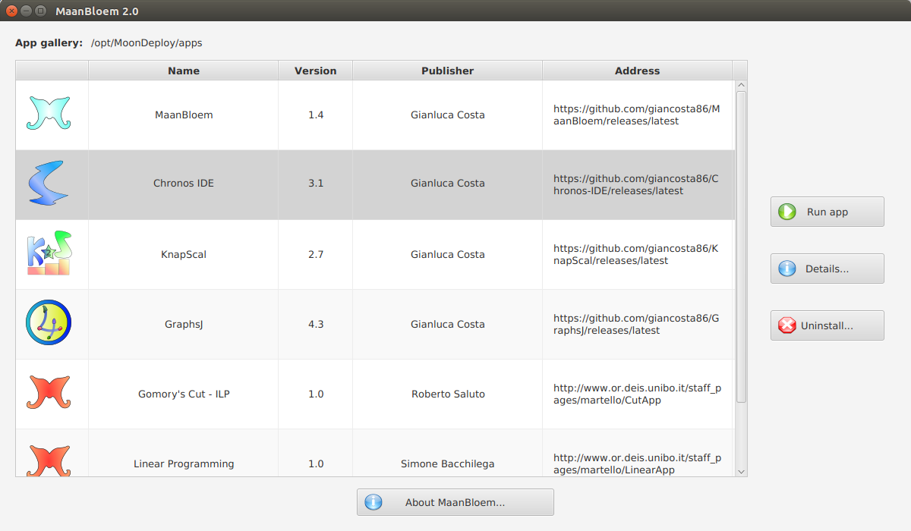

MaanBloem
App manager for MoonDeploy
Introduction

MoonDeploy is a lightweight tool for software deployment: in particular, users can manage their app gallery using their favorite file explorer.
MaanBloem is a simple ScalaFX application simplifying app management even further:
It automatically scans the app gallery, finding and listing every installed app
It can show additional details about each app
Quick & easy app removal - via the Uninstall... button
Requirements
In order to start MaanBloem, Java 8u65 or later compatible is recommended
Running the app
MaanBloem is a MoonDeploy app, too! ^__^
Therefore, the suggested way to run the app consists in clicking on the Run with MoonDeploy button and opening the app descriptor with MoonDeploy.
Alternatively, you might want to download the binary zip and execute one of the scripts in the bin subdirectory.